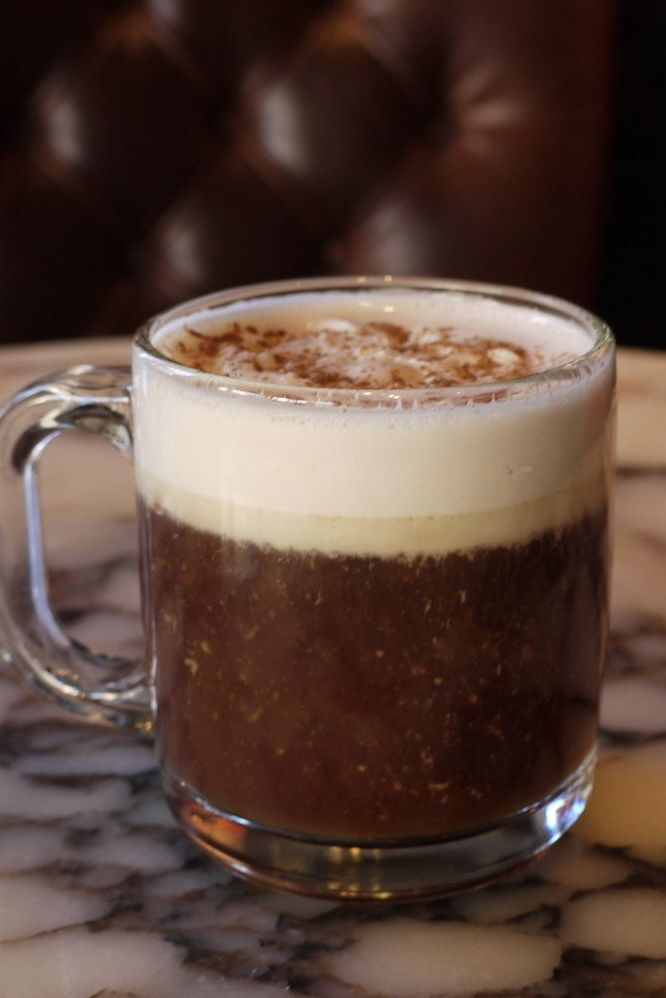

Do you dig the French taste of cognac, but prefer a hint of cherry instead of almonds? This might be the cocktail for you.
What You'll Need
- Hot coffee
- 1 oz Cognac
- 1 oz Cherry liquor
- Splash of cinnamon syrup
- cinnamon
- Maraschino cherry
- Whipped cream
Rim a glass by moistening and carefully pressing it into the sugar.
Mix the cognac and cherry liquor in a warmed glass then fill with hot black coffee. Add a dash of cinnamon syrup.
Top with whipped cream, cinnamon, and a Maraschino cherry.